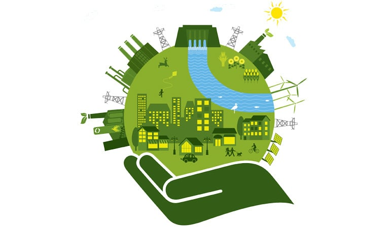

O desenvolvimento sustentável interliga as variáveis econômica, social e ambiental. Eles são os responsáveis por garantir equilíbrio econômico e qualidade de vida. Assim, a prática da sustentabilidade empresarial garante a preocupação com os aspectos econômicos, ambientais e sociais do seu negócio, e passa a ser o único modelo viável de desenvolvimento econômico. “O desenvolvimento sustentável é aquele que atende às necessidades das presentes gerações sem comprometer a capacidade das gerações futuras de atenderem suas próprias necessidades. O desenvolvimento sustentável não se preocupa somente com o presente. Seu objetivo é criar um futuro onde toda a cadeia de produção de uma empresa até seus consumidores continuem a atuar da melhor maneira possível.” World Commission on Environment and Development (WCED), 1986 (Bruntland Report). A partir de então, surge a necessidade das empresas adaptarem seus procedimentos ou mudarem sua maneira de agir. Desse modo, as empresas passaram a incorporar em seus valores a sustentabilidade, sob pena de serem eliminadas do mercado. A aplicação da sustentabilidade empresarial hoje, além de garantir que as empresas se estabeleçam no mercado, atendendo os requisitos legais vigentes, passa a ser o diferencial para que as mesmas se sobressaiam em um ambiente cada vez mais competitivo.
Hoje, já existem diversos tipos de relatórios e índices específicos para medir o grau de sustentabilidade empresarial de um negócio. Esses relatórios são utilizados para comprovação dos resultados de ações e planos de sustentabilidade. Além de garantir o investimento na área e a viabilidade financeira do projeto. A meta é tornar esse tipo de relatório cada vez mais relevante, tanto para diretoria e demais colaboradores, quanto para a sociedade e possíveis acionistas.
Os padrões de consumo da sociedade atual e o modelo produtivo insustentável são ameaças constantes para a disponibilidade dos recursos do planeta. A destruição de ecossistemas e a exploração social são realidades desta sociedade que evidencia a disparidade da entrada de recursos e o consumo. Segundo o Programa das Nações Unidas para o Meio Ambiente (PNUMA), o Consumo Sustentável é definido como: “O uso de bens e serviços que atendam às necessidades básicas, proporcionando uma melhor qualidade de vida, enquanto minimizam o uso dos recursos naturais e materiais tóxicos, a geração de resíduos e a emissão de poluentes durante todo ciclo de vida do produto ou do serviço, de modo que não se coloque em risco as necessidades das futuras gerações”. O Consumo Sustentável é, portanto, identificado como um fator fundamental para se alcançar um desenvolvimento sustentável. Faz-se necessário que os padrões de consumo e produção sejam mais equitativos e que os países se adaptem aos padrões sustentáveis, tanto no aspecto social como no ambiental, com base em uma melhoria da qualidade de vida.
A ecoeficiência é alcançada mediante o fornecimento de bens e serviços à preços competitivos, desde que satisfaçam as necessidades humanas e tragam qualidade de vida. Embora, ao mesmo tempo, deseja-se a redução progressiva do impacto ambiental e o consumo de recursos ao longo do ciclo de vida, em condições, no mínimo, equivalentes à capacidade de sustentação estimada da Terra. (Conceito elaborado pelo World Business Council for Sustainable Development – WBCSD, em 1992). É a eficiência no uso de materiais e energia com o intuito de reduzir os custos econômicos e os impactos ambientais. Elementos da Ecoeficiência:
A prática da sustentabilidade deve ser incorporada às estratégias das empresas. Esta prática visa desenvolver para o negócio soluções inovadoras. A proposta é aliar a redução de riscos e custos e ao mesmo tempo minimizar impactos ambientais e sociais. Assim, é possível otimizar recursos e maximizar as oportunidades. Para se aplicar a sustentabilidade em um determinado negócio, é fundamental que a primeira medida a ser adotada seja a elaboração de um planejamento e de um estudo minucioso dos processos produtivos da própria empresa e de seus fornecedores, tendo sempre como foco os trê pilares: respeito ao meio ambiente, valorização social e lucratividade. Ao começar a aplicar as estratégias de sustentabilidade, o empresário estará investindo em lucratividade e em redução de custos operacionais futuros, pois serão identificadas as oportunidades de redução de gastos com a manutenção e funcionamento da empresa e das rotinas diárias de operação. A empresa passará a trabalhar com o princípio da prevenção, ao contrário do modelo utilizado atualmente, onde a empresa arca com custos de tratamento e de disposição final. As estratégias, a seguir, devem ser adotadas pelas empresas que querem aplicar a sustentabilidade ao seu negócio.
Produção Mais Limpa A Produção Mais Limpa (P+L) foi definida pelo PNUMA, no início da década de 1990. Esta é a aplicação contínua de uma estratégia ambiental preventiva e integrada aos processos, produtos e serviços. Busca-se dessa forma aumentar a ecoeficiência e reduzir os riscos ao homem e ao meio ambiente. Deve-se entender que todos os resíduos que a empresa gera, ocasionam custos. Isto significa que foram comprados a preço de matéria-prima e consumidos insumos como água e energia. Uma vez gerados, continuam a consumir recursos, seja sob a forma de gastos com tratamento, nas formas de disposição final, ou sob a forma de passivo ambiental gerado. Consequentemente, acarreta-se infrações ou ainda danos à imagem e à reputação da empresa. O objetivo da Produção mais Limpa é a redução dos impactos ambientais atuando de maneira preventiva.
Com sua implantação, as empresas se tornam mais competitivas, transparentes, inovadoras e ambientalmente responsáveis. Portanto, a Produção mais limpa deve estar no centro do pensamento estratégico de qualquer empresa. De um lado, ela traz, comprovadamente, benefícios econômicos. O que significa perdas, quase sempre danosas ao meio ambiente, bem como redução de custos – o que, por sua vez, influencia a posição competitiva do negócio. Por outro lado, a empresa que produz limpo tem sua imagem em harmonia com a comunidade. Contudo, essa associação poderosa é capaz de reforçar a sua competitividade, no mercado.